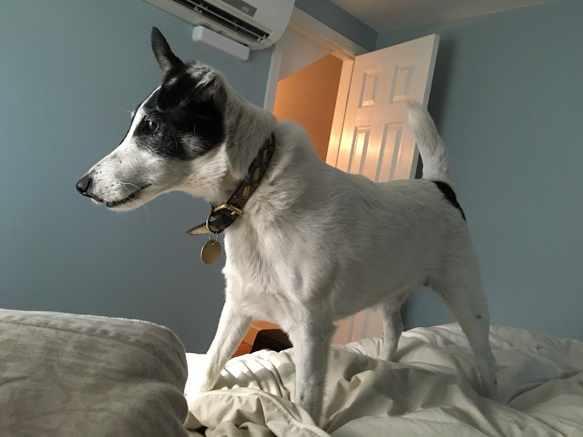
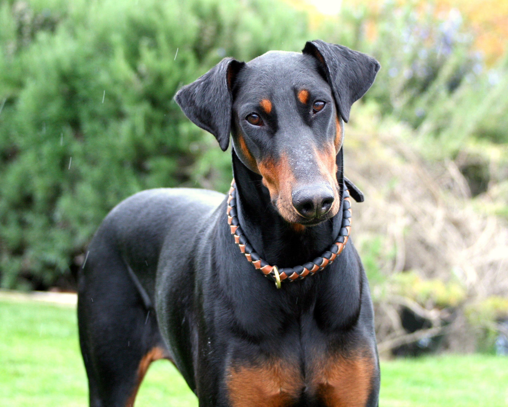
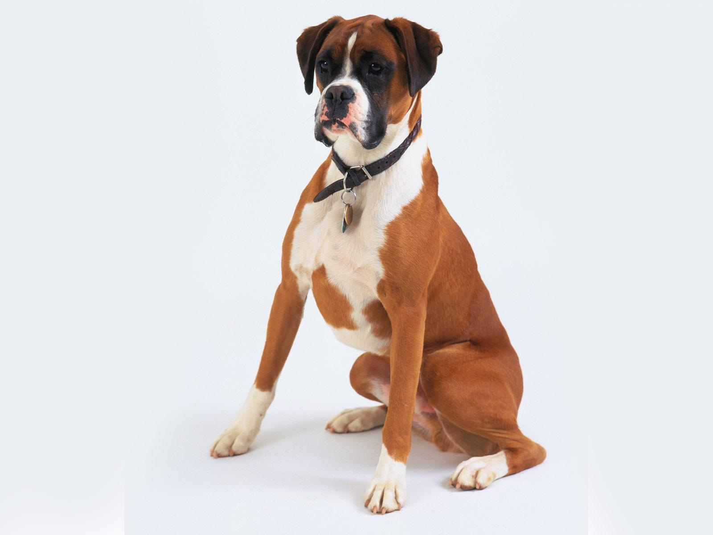
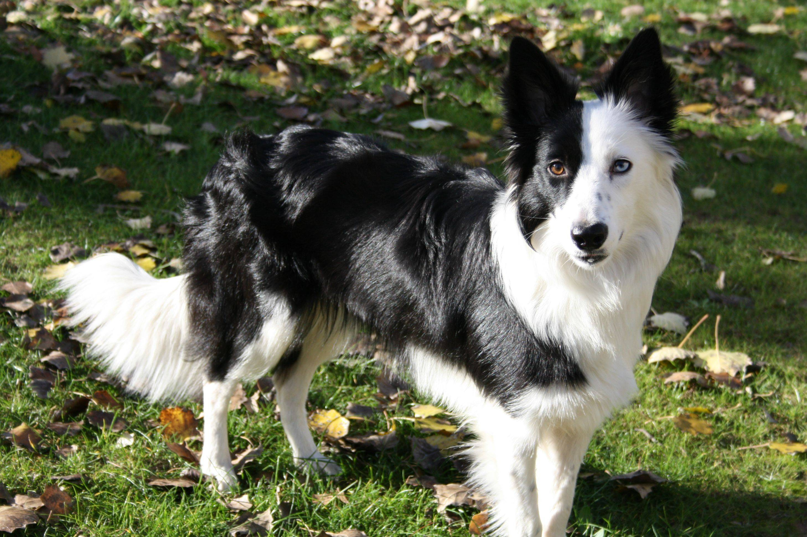

Smooth-haired Fox terriers
These guys are born hunters. They are also very stubborn. Trying to train a fox terrier is an uphill battle. But they are really loving and loyal, as long as their not on the 'hunt'.

Doberman Pinschers
Dobermans have to be one of the most misunderstood breeds out there. While they're known as a 'gaurd dog,' they are some of the most loving, loyal, and smartest of any breed.

Boxers
Boxers have lots of character. They may look tough, but they have a lot of heart and are extremely loyal to their owners. They are easily trainable. Just watch out for that drool!

Border Collies
Border Collies are a herding dog. They like to be in control and prefer to always have a task to complete. They're great frisbee dogs, easily trainable, and require loads of attention.
